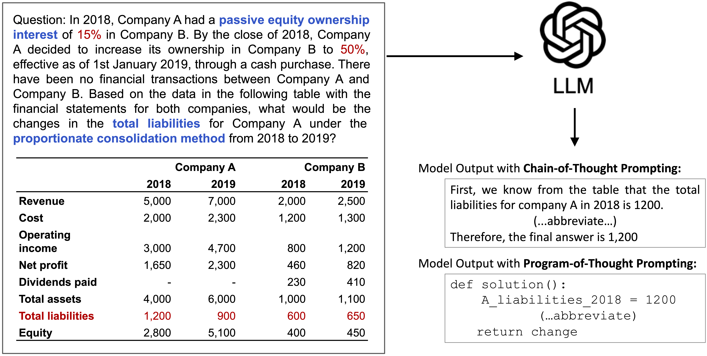

Accuracy scores on the development subset (800 examples: 200 in DMSimpShort, 100 in DMSimpLong, 200 in DMCompShort, 300 in DMCompLong) of DocMath-Eval.

Overview of
DocMath-Eval.
Introduction
Large Language Models (LLMs) have shown impressive capabilities in solving math word problems, but their ability to perform numerical reasoning in specialized domains with complex documents remains understudied. To address this gap, we present DocMath-Eval, a benchmark designed to evaluate LLMs' numerical reasoning skills in interpreting finance-specific documents containing both text and tables.
DocMath-Eval consists of four evaluation sets with varying levels of difficulty in numerical reasoning and document understanding:
- DMCompLong: A newly created set testing complex reasoning over extremely long documents with multiple tables.
- DMSimpShort: Simple reasoning over short documents with one table.
- DMSimpLong: Simple reasoning over long documents with multiple tables.
- DMCompShort: Complex reasoning over short documents with one table.
Our analysis reveals that while LLMs perform well on simpler tasks, they struggle with more complex scenarios involving lengthy documents and advanced numerical reasoning. This gap underscores the critical role that DocMath-Eval will play in advancing LLMs' capabilities in specialized domains like finance. The benchmark highlights the need for further research to enhance LLMs' ability to handle complex, real-world numerical reasoning tasks in expert domains.
Leaderboard on DocMath-Eval (development)
Leaderboard on DocMath-Eval (test)
Accuracy scores on the test subset (3200 examples: 800 in DMSimpShort, 400 in DMSimpLong, 800 in DMCompShort, 1200 in DMCompLong) of DocMath-Eval.
Evaluation Sets: SS: DMSimpShort, CS: DMCompShort, SL: DMSimpLong, CL: DMCompLong.Prompting types: (P): Program-of-Thought, (C): Chain-of-Thought.
üö® To submit your results to the leaderboard, please send to this email with your result json files.
üö® For more submission details, please refer to this link.
BibTeX
@misc{zhao2023docmathevalevaluatingnumericalreasoning,
title={DocMath-Eval: Evaluating Numerical Reasoning Capabilities of LLMs in Understanding Long Documents with Tabular Data},
author={Yilun Zhao and Yitao Long and Hongjun Liu and Linyong Nan and Lyuhao Chen and Ryo Kamoi and Yixin Liu and Xiangru Tang and Rui Zhang and Arman Cohan},
year={2023},
eprint={2311.09805},
archivePrefix={arXiv},
primaryClass={cs.CL},
url={https://arxiv.org/abs/2311.09805},
}